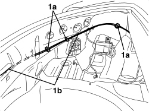
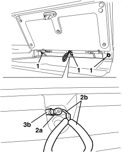

7025B34 BOOT LID EMERGENCY OPENING CONTROL - R.R.
- Path
- Procedures > 70 FITTINGS > 7025 COMPARTMENT COVERS > 7025B BOOT LID > 7025B34 BOOT LID EMERGENCY OPENING CONTROL - R.R.
- Kind
- repair procedure (removal / refitting; the operation number is the code)
- Applies to
- engines: 2.2 JTS, 3.2 JTS; all production periods
- Interactive page
- https://sloeber94.github.io/elrnDB-aBrrSpdr/en/#/946004068
Applies to: engines: 2.2 JTS, 3.2 JTS; all production periods
 Removing
Removing
 Refitting
RefittingOp. 7040B20 BACK TRIM FOR LUGGAGE COMPARTMENT/LOAD PLATFORM - ARRANGE
Op. 7040B10 LOAD PLATFORM (LUGGAGE PLATFORM) TRIM - R+R
Op. 7040B22 LUGGAGE COMPARTMENT/LOAD PLATFORM MOULDING - R+R
Op. 7040G30 BOOT LIGHT BULB HOLDER - R.R.
- Remove the left side trim.
Op. 7040B18 LOAD COMPARTMENT LOAD PLATFORM SIDE TRIM ONE LH OR RH - R.R
Op. 7025B58 BOOT LID LOCK STRIKER - R+R
1. Working in the luggage compartment, release the retainers (1a) for the boot lid emergency opening control cable (1b) from the bodyshell.

Applies to: engines: 2.2 JTS, 3.2 JTS; all production periods
Op. 7040L31 REAR ODDMENTS COMPARTMENT - R.R.
1. Working via the compartment, undo the bolts fixing the trim.
2. Release the front end (2a) of the control cable (2b) from the housing.
3. Extract the control cable and outer casing (2b) from the opening (3b).

Applies to: engines: 2.2 JTS, 3.2 JTS; all production periods
Refitting
Removing- Check that the control cable is not damaged.
- Attach the front end of the control cable to the housing.
- Tighten the trim fixing bolts.
Op. 7040L31 REAR ODDMENTS COMPARTMENT - R.R.
- Working in the luggage compartment, attach the control cable retainers to the bodyshell.
Op. 7025B58 BOOT LID LOCK STRIKER - R+R
Op. 7040B18 LOAD COMPARTMENT LOAD PLATFORM SIDE TRIM ONE LH OR RH - R.R
Op. 7040G30 BOOT LIGHT BULB HOLDER - R.R.
Op. 7040B22 LUGGAGE COMPARTMENT/LOAD PLATFORM MOULDING - R+R
Op. 7040B10 LOAD PLATFORM (LUGGAGE PLATFORM) TRIM - R+R
Op. 7040B20 BACK TRIM FOR LUGGAGE COMPARTMENT/LOAD PLATFORM - ARRANGE
- Check that the boot lid emergency opening control cable is working properly.
Topics linked from this page (7)
- 7025B58 BOOT LID LOCK STRIKER - R+R
- 7040B10 LOAD PLATFORM (LUGGAGE PLATFORM) TRIM - R+R
- 7040B18 LOAD COMPARTMENT LOAD PLATFORM SIDE TRIM ONE LH OR RH - R.R
- 7040B20 BACK TRIM FOR LUGGAGE COMPARTMENT/LOAD PLATFORM - ARRANGE
- 7040B22 LUGGAGE COMPARTMENT/LOAD PLATFORM MOULDING - R+R
- 7040G30 BOOT LIGHT BULB HOLDER - R.R.
- 7040L31 REAR ODDMENTS COMPARTMENT - R.R.